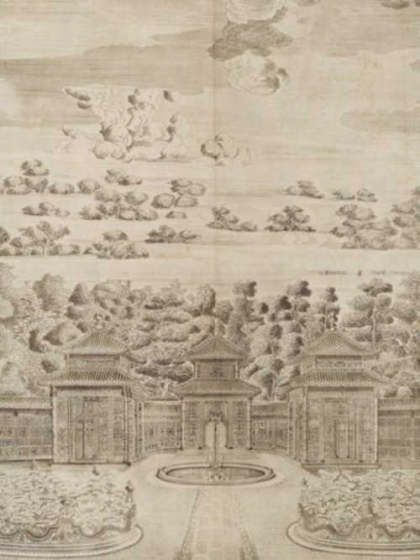
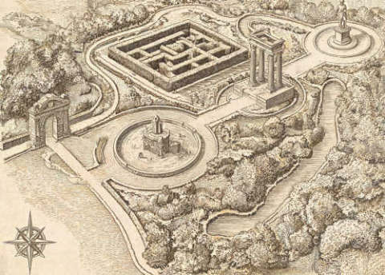
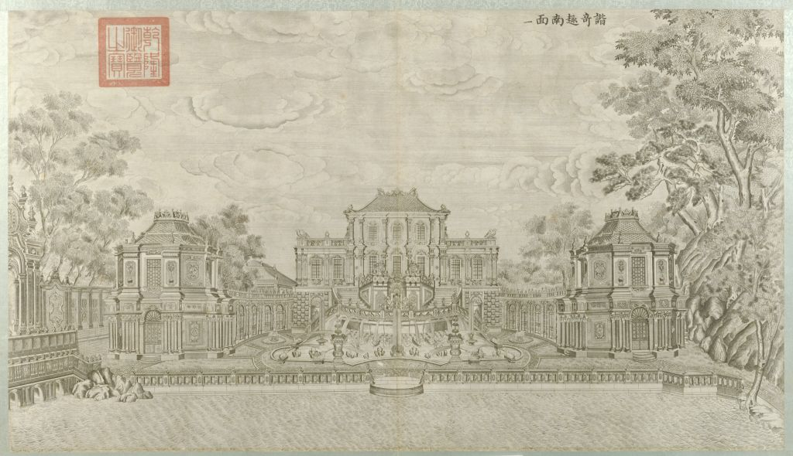
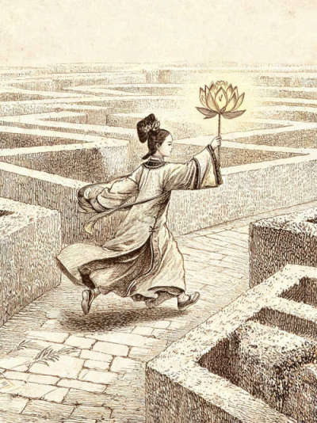
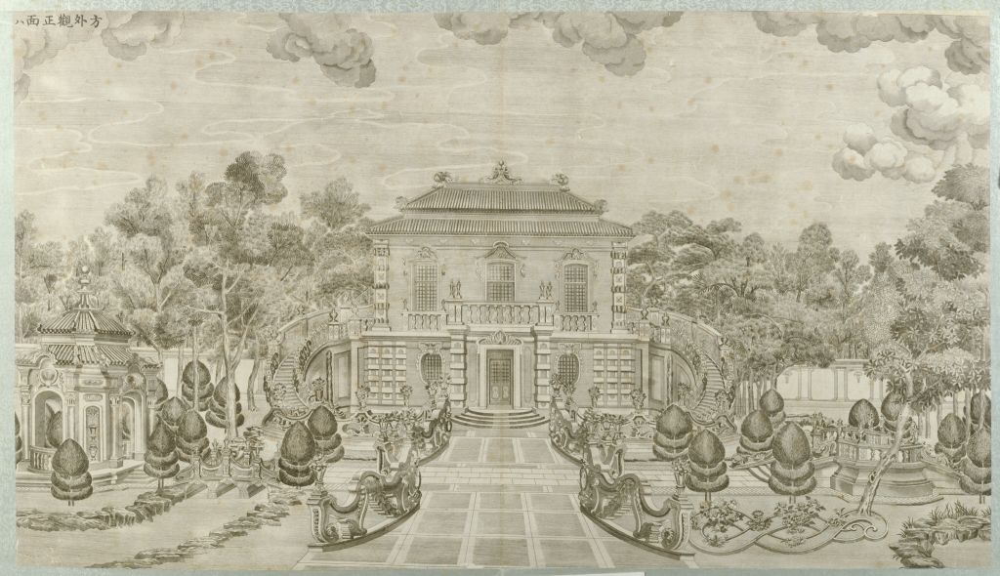
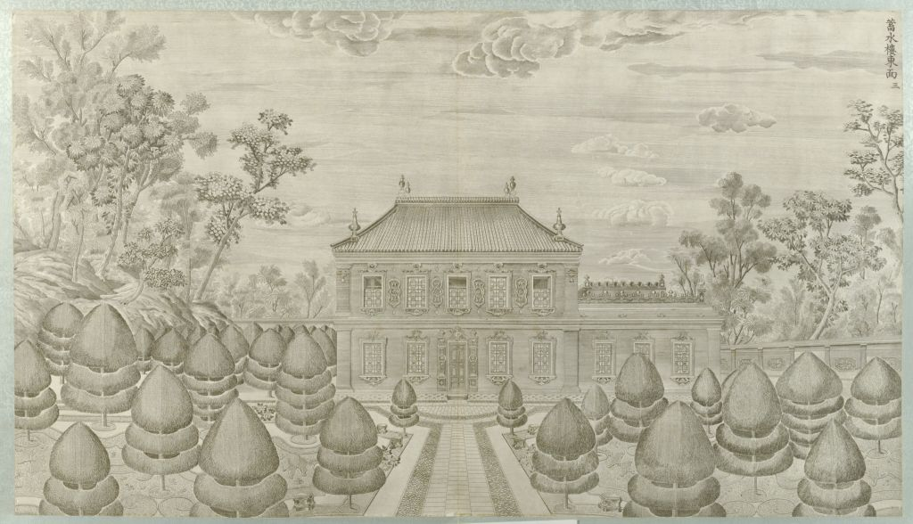
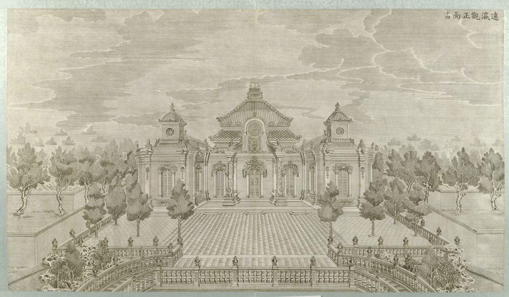
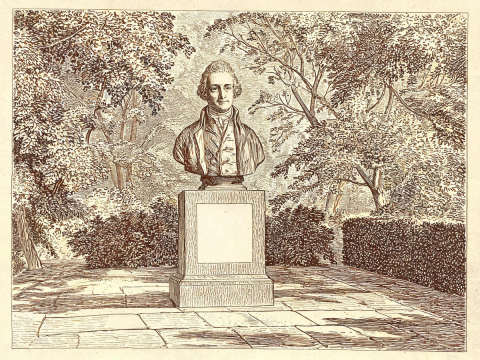

西洋楼铜版图 · 第二十一图
每页呈现什么
中间几站的字，用飞书 v3「剧情内容」原句，不另写。先看目录里「中间剧情怎么上屏」。 壳还是旧纸档案手账。游客侧不出现「谜题」两个字。
还用现在这套颜色
旧纸整页底 #F4EDDC
暖褐墨正文
铜绿选中、提示、史料标题
朱砂确认钮、日期章。全 App 唯一红
旧金答对的铜钉
橄榄编号签、次要批注
一屏只办一件事。海晏堂不要两问叠在一起。
有对错的题：先选中，再按「就是这样」。点一下不当一次。
关人声也能走完：【做】条和确认钮始终在。
门票支付逻辑不动。iOS 买不了时走「暂未开放」。
游客看见的字里不要出现「谜题」。
有对错的题取消「先不猜」。第三次给答案，史料卡照发。
谐奇趣不要写「原谱」。选项里的「水法」不可点成词条。
NFC 贴卡只是进页的一种方式，不能当成过关条件。
中间剧情怎么上屏
怎么切，不改字
- 到站该章「剧情内容」里，callout 之前的段落。原句，可分页，不压缩。
- 动手callout 里的问句和选项。屏上不出现「谜题1」这种内部标题。
- 揭晓callout 里「通关反馈／答案确认后」的那几句 + 紧跟在 callout 后面的剧情段落。
- 离站原文里看路线图、圈注、下一处的段落。单独一屏或接在揭晓后。
不上屏：史料基础、制作注、魏嘉琪核验句、划掉的旧段、plan B。日记引文、地图圈注用「纸」的引文块，句子仍用原文。
谐奇趣
- 到站
按照路线图走进入口，就来到了谐奇趣。我记得这是西洋楼景区建成的第一座欧式建筑，也是中国皇家园林史上首座西洋建筑。主楼前后都曾设有水法，这里还曾用于演奏中西音乐。怪不得叫“谐奇趣”，要是能听听当时的音乐就好了。【做】听 DJ-06。未听完不展开选项。
- 动手原文问句：刚才的谐奇趣里，你听见了哪些声音？ A 小拉琴 B 西洋箫 C 琵琶 D 笙 E 班竹板 F 水法。对 A/B/C/F。错了用原文提示：「再听一次，注意声音进入的先后顺序」。
- 揭晓画面：谐奇趣逐渐出现喷泉和乐师剪影。原文：
乾隆时期，宫廷中已经出现小拉琴、西洋箫等中西乐器。谐奇趣建成后，也成为演奏中西音乐、观赏水法的场所。原来当年的谐奇趣，不只是“看”的地方，也是“听”的地方。「水法」挂史料卡。选项 F 不可点成词条。不声称原曲。
- 离站
继续看路线图，谐奇趣后面还有一个被重重圈出来的地方。旁边只写着一句：“灯行阵中，路藏墙间。”我顺着地图上的路线继续往前。圈出来的下一处，就是黄花阵。制作注不上屏（DJ-08 若做只挂这一段；不要带去蓄水楼）。
黄花阵
- 到站
到了黄花阵的入口处，眼前景观让我有些震惊——一个皇家宫苑中竟有一座迷宫！不过皇家宫苑中为什么会有一座迷宫呢？
- 作用原文选项 A 军事防御 B 皇家藏书楼 C 中秋节的皇家娱乐场所，举办“迷宫灯会”游戏 D 皇子们的秘密议事厅。揭晓后接原文：
原来，这个黄花阵是皇帝用来观赏宫女在迷宫路径中奔跑嬉戏的。好嘛，这下不出门就有游乐场了！不过迷宫和黄花又有什么关系呢，像这样的地方起名字肯定是有些其渊源的可是这又和“黄花”有什么关系呢？角数字按正文：名字题卡片数字 0。
- 名字对照 DJ-09。语音或文字。标准句用原文：「由于宫女们手持黄色彩绸扎成的莲花灯，所以这个迷宫也得名黄花阵。」然后：
这迷宫看上去很难走，究竟会有多难走呢？我也要试试看，也许黄花阵的中央，还有什么我值得考察的东西呢。
- 中心亭
终于到了中心亭了，好别致的亭子啊，之前上学的时候我就听老师说过西洋楼的建筑是中西结合的典范，不过一直没机会来，今日一见果然如此【做】DJ-10 小册子。拍照记录。四条仍用原文那四条构件。拍完「记下了」。揭晓后：原来这些花纹也有这般讲究！我记得从黄花阵迷宫入口这一路走来，两边墙上有好多花纹，这些肯定也有些特殊的含义。我看到了好多花纹
- 墙纹四图选万字纹。揭晓原文：「迷宫墙体刻满万字回纹，寓意福寿绵长。」卡片数字 6。
- 离站
走出迷宫，档案里有一行后来补上的记录：眼前能走进去的墙，并不是乾隆年间留下的原墙。挂 SL08。然后：我按照地图继续走，下一站是方外观。
方外观
- 到站
站在方外观的正面看现在的方外观只剩下部分台基和石构，不过档案中的《方外观正面》铜版图还保存着它原本的样子让我能够了解原来的精美建筑：两层西式楼体、半环形石阶，上面却盖着中国传统样式的重檐屋顶。继续往下看还能发现，方外观内部曾设置阿拉伯文碑刻。可是西式楼体、中式屋顶、阿拉伯文碑刻，为什么会同时出现在一座建筑里？
- 动手六张卡选三项。原文 A 西式两层楼体 B 中式重檐屋顶 C 阿拉伯文碑刻 D 十二生肖兽首 E 黄花阵迷宫墙 F 猎狗逐鹿喷泉。对 A/B/C。
- 揭晓屏幕叠合原文公式：西式建筑形式 + 中国传统屋顶 + 伊斯兰文化元素 = 方外观。然后：
原来这里根本就不是一座纯粹的西式建筑呀。再往下翻，档案页边写着一个名字：容妃。香妃辨析只在史料卡。制作注不上屏。
- 竹亭原文有《竹亭北面》。按原文放：
这里怎么还有一张《竹亭北面》的铜版图？图上是五座彼此相连的亭子，档案标注为“五竹亭”，原本就在方外观对面，与这里隔水相望。传说旁边还记着一条流传下来的说法：容妃在方外观礼拜时，乾隆曾在五竹亭等候。这件事情是真是假我们不得而知，真的有这回事吗？我继续往下找，却没有找到能够直接证明这件事的史料。看来这件事条只能先记作——“传说，待证。”不过，方外观和五竹亭相对的位置是真实存在的。一个人在这里礼拜，另一个人在对面等待，这个后来流传下来的故事，似乎也正是从这样的空间关系里慢慢长出来的。
- 离站
我把卡片夹回档案，继续翻看路线图。五竹亭之后，还有一条线一直往前延伸，最后停在了一座很大的水池旁。旁边写着三个字：海晏堂。再翻一页，十二尊生肖兽首出现在铜版图上，整齐地排列在水池两侧。鼠、牛、虎、兔……正好十二个。而且，每一尊旁边还对应着一个时辰。等等，十二生肖对应十二时辰，这倒不难理解。可为什么还要让它们喷水？如果只是为了做一座好看的喷泉，为什么偏偏还要按照十二个时辰来安排？看来下一站真正要查的，不只是这些兽首去了哪里。而是——这座喷泉，为什么还会“报时”？
海晏堂
- 到站
沿着地图走，我来到了海晏堂遗址。眼前已经很难看出当年建筑完整的样子了，但把档案里的《海晏堂西面》铜版图和现场对照起来，还是能找到一些对应的位置。铜版图里，这里原本排列着十二尊人身兽首像，分别对应十二生肖，也对应一天里的十二个时辰。看到这里，我忽然想起来，调查日记中好像有一句话：“十二兽各守一时，至午而全见。”“各守一时”应该很好理解，可“至午而全见”又是什么意思？
- 动手原文问句：如果在正午来到海晏堂，当年的十二生肖喷泉会是什么样子？ A 只有“午马”喷水 B 十二生肖同时喷水 C 鼠、马同时喷水 D 所有兽首停止喷水。对 B。
- 揭晓原文：画面里的十二生肖一个接一个亮起，到了正午，十二道水流同时喷出。
原来所谓的“水力钟”，真的就是用水来表示时间。这样一来，调查日记里的那句话也说得通了。可是这些喷泉怎么喷出的水呢？
- 离站
水力钟在眼前，水源却不在水池里。路线图在海晏堂北面另标了一处高台——蓄水楼。西洋楼里的喷泉不是电泵。要先弄清水是怎么被抬高的，再往东去看大水法把水做成了什么。钮：请前往蓄水楼。制作注不上屏（不要在这里抛「大水法以水成戏」）。
蓄水楼
- 到站
原来喷泉的水，靠的就是这座蓄水楼。这里是海晏堂北面的高台蓄水，不是谐奇趣西北那座。刚才在海晏堂看见兽首喷水，水源在这里。可是为什么能把水提高呢？特刊里似乎有线索
- 动手原文：蓄水楼为了方便供水，通常会建得比较 a 高 b 低。
- 揭晓／离站
还好仅存的物理知识没忘光。原来喷泉里面的物理原理是这样的：抬高蓄水，用高度差换成水压，再从喷嘴喷出。水源查清了。日记里那行淡字这才接得上：「海晏以水记时，大水法以水成戏。」海晏堂用水来报时。再往东，大水法又把水做成了什么？我把特刊收进档案袋，按地图往东走。
大水法 · 远瀛观
- 到站
顺着档案上的路线继续往前，大水法遗址逐渐出现在眼前。和海晏堂相比，这里的遗迹看起来更直观一些。高大的石构还留在原地，但只看现在的样子，还是很难想象它当年到底是什么样的。我翻了翻档案，正好找到了一幅《大水法南面》的铜版图。图中的石构轮廓和眼前能够对得上。但真正吸引我注意的，反而是前面的喷水池。不过水池中间怎么还有一只鹿？周围那些动物又是在做什么？
- 猎狗原文三件：梅花鹿 → 喷水池中央；十只猎狗 → 环绕梅花鹿；两只大型卷尾铜兽 → 水池东西两端。归位后：
最后一只猎狗归位之后，水流一下子从屏幕里的各个方向喷了出来。原来这些动物并不是随便摆在喷泉里的装饰。鹿站在中间，猎狗围在周围，水流一喷起来，整个场景一下子就像“动”了起来。所以，海晏堂是用水来表示时间，大水法则是用水来表现一场正在发生的追逐。难怪日记里会写“以水成戏”。
- 引出北侧
我本来准备把档案翻向下一页准备关掉AR，却发现复原画面的后方似乎还有一座建筑。刚开始我还以为那只是大水法的一部分，可再看看铜版图，又抬头看了看现场的方向，好像并不是这样。大水法后面，原本还有一座更高的建筑。那会是什么地方？问句用原文：大水法北侧、位于高台上的建筑是什么？ 答案：远瀛观。
- 远瀛观章整段原文，仍站在大水法：
我抬起头。大水法北侧高台上，就是它。再转身往南，石屏风所在的观水法也在同一条轴上。从北到南：远瀛观、大水法、观水法。它们是一组南北相对的景观，不是三个要依次走进去的下一站。我们走的路却是东西向：西边刚离开海晏堂和蓄水楼，眼前是大水法，再往东才是雨果雕像。纸：路线图圈「上观其形。」然后：不用绕到北面再走一站。站在大水法，抬头看形，低头看水，侧过身能看见观水法的石屏。看完，继续往东。档案下一处标记是一个名字，和一张纸：维克多·雨果，《致巴特勒上尉的信》。不过雨果从来没有来过圆明园。那封公开信，为什么会被放进这份寻找「第二十一图」的档案里呢？
改的是切屏，不是改字。V2.3 的宫女、匠人、蒋友仁、当差的人，不要塞进这几站——v3「剧情内容」里没有。
所有页共用的壳
‹ 返回No.站号
到站短文 · 2 到 4 句
做 · 这一屏要动手的那一件
听 · 本页讲述（可关）
这一屏的主画面 / 题面
主操作区（选、听、填、对照）
提示 · 答错才出现
就 是 这 样
地图 · 听导览 · 手册
屏上固定有
- 左缘一列活页装订孔。
- 右上角橄榄细框编号签，避开微信胶囊。
- 左上返回。右下三颗圆钮：地图、语音导览、手册。
- 正文是暖褐墨、行距偏松的宋/黑体。手写批注用楷，略斜。
- 【做】是朱砂虚线细条，常显。关旁白的人只看这一条也知道要干什么。
- 主按钮是朱砂描边的档案签，字距拉开：「就是这样」「继续」「记下了」。
通关后先弹出史料卡（右下角一个数字），再给一句收束，再盖朱砂印，再进下一段路。
有对错的题：三次怎么呈现
第一次答错1 / 3
C 中秋灯会，宫女跑阵
再看看画里人手里拿着什么、往哪儿跑。
再 试 一 次
三次各长什么样
- 空屏：选项都是浅棕底、虚线边。确认钮发灰，没选中不能按。
- 选中：铜绿描边，左侧一条铜绿。仍未判定。
- 第一次错：该项变淡、斜线碎纹。下面出铜绿手写提示一，不泄底。
- 第二次错：提示二，指到画面或手里的道具。
- 第三次：正确项被勾上并锁死，其余发灰。按钮改成「记下了」。文案直接公布答案。史料卡照样弹出。
- 不要红字「错误」，不要无限重试，不要跳过不发卡。
门票
西洋楼铜版图 · 实景解谜
第二十一图 · 完整考察
沿路走一遍：入口 · 谐奇趣 · 黄花阵 · 方外观 · 海晏堂 · 蓄水楼 · 大水法 · 雨果
集齐日期卡，绘制并保存属于你的「第二十一图」
次日之信 · 考察者留言簿
门票 ¥19.9
一次解锁 · 此账号长期有效
一次解锁 · 此账号长期有效
解 锁 完 整 考 察
呈现
- 一张微斜的米白票。上下两截，中间是撕票齿孔。
- 上截：路怎么走（按现在的踏线写，不要再写「四站＋六处支线」）。
- 下截：价格、解锁钮。已付款显示朱砂「已检票」，自动进封面。
- iOS 买不了：不摆假按钮，改成「完整版暂未开放购买 / 可先返回」。
不要在这页出题。不要改支付。不要把支线养雀笼写进票面。
封面
No.000

闻有第二十一图，未见。
西洋楼铜版图
朱砂方印 · 第二十一图
开 始 考 察
考察手册 玩法说明
呈现
- 上 1/3：铜版画，邮票齿孔框 + 胶带 + 邮戳贴纸 + 朱砂日期章「乾隆四十六年 / 1781」。
- 中：书名「西洋楼铜版图」，旁盖方印「第二十一图」。
- 下：票根卡。主钮「开始考察」，次钮「考察手册」「玩法说明」。
- 开玩引导仍只镂空这三个短标签，不要开场念一遍路线目录。
序章 · 翻档案
‹序章
一段到站叙事，2～4 句一屏。
翻页，不要整页长滚。
翻页，不要整页长滚。
听 · 序章讲述
下 一 页
呈现
- 标题「序章」。正文分页，一屏一段。
- 底部可听本页讲述，关了也能翻。
- 最后一页把人领到「清点交到你手上的东西」，信先不拆。
不要写「怎么走这一趟」的总目录。不要定位答题。
序章 · 清点与地图
‹序章 · 二
清点交到你手上的东西
档案袋
日记
地图（西洋楼在长春园东北）
一封信 · 到门口再拆

谐奇趣 → 黄花阵 → 方外观 → 海晏堂 → 蓄水楼 → 大水法 → 雨果
档 案 已 收 好，信 先 封 着
呈现
- 一张档案清单。每件东西一行，白色小标签写名字（清点用，不是题）。
- 明确写：信先别拆，到了遗址门口再拆。这封是邀请信，不是雨果那封。
- 地图只标主线点。远瀛观、观水法不要画成下一站，它们在大水法现场北看 / 南路过。
- 钮：「档案已收好，信先封着」→「前往西洋楼入口」。
不要「你现在在哪一座」的定位题。不要写游乐场。不要预告每站要猜什么。
路上
入口谐奇趣
往东走。下一处是谐奇趣。
继 续 前 往
七段路（屏上只写这一段的从 / 到）
- 序章 → 入口
- 入口 → 谐奇趣
- 谐奇趣 → 黄花阵
- 黄花阵 → 方外观
- 方外观 → 海晏堂
- 海晏堂 → 蓄水楼
- 蓄水楼 → 大水法
- 大水法 → 雨果（路过观水法，北侧已经对过远瀛观）
谐奇趣、方外观、蓄水楼不再写成「路过能翻就翻」的散页。养雀笼从主链拿掉。
入口 · 拆邀请信
‹No.S1-1
西洋楼入口 · 拆信
到了门口。说好了到门口拆信，现在就是门口。
做 · 拿出一路封着的信封，撕开封口
线下道具 · 实体信封
撕开封口，抽出信纸，先读信
撕开封口，抽出信纸，先读信
撕 开 封 口
两幕各呈现什么
- 封着：短文点明这是邀请信、到门口才拆。道具卡「撕开封口 / 抽出信纸 / 先读信」。钮「撕开封口」。
- 读信：屏幕不再印信稿。只写「信在你手里。正面慢慢读。读完翻到背面。」钮「信读完了」。
- 封口上的半字先别管——下一屏才合。
不要把雨果《致巴特勒上尉的信》放在这里。不要在屏幕上全文显示邀请信（纸就在手里）。
入口 · 封口半字
‹No.S1-1
封口上的半字
做 · 封口下半与信背上半合上，把地点填进来
1 看封口：三个字的下半截
2 信纸背面：三个字的上半截
3 上下拼合，填在下面
2 信纸背面：三个字的上半截
3 上下拼合，填在下面
确 认
呈现
- 输入一行，楷体，下划线。没有四个选项。
- 错一：「先看封口，再翻信背。」错二：「上下拼合，是一个园里的地名。」错三：框里填入「黄花阵」，钮变「记下了」。
- 对了之后的收束：半字指向黄花阵；下一处先去谐奇趣，迷宫在更东。
不要写游乐场。不要让半字直接把人送进迷宫而跳过谐奇趣。
谐奇趣 · 听一曲
‹No.XQ

这座小楼还在。当年这里奏乐、看水。
做 · 戴上耳机，听完再勾你听见的
听 · 约三十秒
依据史料重构 · 不是当年的谱
A小拉琴 B西洋箫 C琵琶
D笙 E班竹板 F水声
就 是 这 些
呈现（先听，后勾）
- 到站 2～3 句。不写「史上第一座西洋楼」，不写水从哪来（那是蓄水楼的事）。
- 主图：谐奇趣南面铜版，双框 + 胶带。
- 大钮「听 · 约三十秒」。未听完，六键收着或发灰。iOS 必须点一下才出声。
- 进度条只是一条时间，不要把「水 / 琵琶 / 小拉琴 / 箫」分层画在进度上（那等于把答案画出来）。
- 听完展开六键，可多选，铜绿多勾。钮「就是这些」。
- 对：A 小拉琴、B 西洋箫、C 琵琶、F 水声。全对过；对满 3 且错不超过 1 也过。
- 错一：「再听一次，注意声音进来的先后。」错二：「拨弦、拉弦、吹管，还有水。笙和竹板没有。」错三：勾上 A/B/C/F，其余灰掉，「琵琶、小拉琴、西洋箫，和水。」
- 通关句里可以出现「水法」这个词，并挂史料。选项 F 写成「水声」或「喷水」，不要做成可点的词条。
贴 NFC 只是打开这一页的一种办法。没贴卡、只从路上进来的人，同样听、同样勾、同样过。
不要写「原谱」「当年的曲子」。不要自动播放。不要把蓄水楼的原理写在这页。
黄花阵 · 灯戏图
‹No.S2-1
黄花阵到了。齐腰砖墙。先翻夹照片的那一页。
做 · 对画和地：画上的墙还在，画上的人呢

夜里提灯往中心亭跑——他们在干什么？
纸上有人，地上没有。他们在干什么？
A 在打仗
B 在散步看花
C 中秋灯会，宫女跑阵
D 在祭祖
就 是 这 样
呈现
- 到站短文 + 灯戏图（双框、胶带、邮票压角）。
- 图下一条手写批注，不泄底。
- 问句宋体加字距。四个选项，选中再确认。
- 错一：「再看看画里人手里拿着什么、往哪儿跑。」错二：「夜里提灯往中心亭跑，是在跑阵。」错三：高亮 C，「中秋灯会。宫女跑阵，先到有赏。」
- 对了：史料卡（角数字 2）→ 宫女那段台词 → 「黄花两个字，是不是打灯上来的？」领到下一屏。
不要输入框。不要「说个大概」。不要「先不猜，往下走」。
黄花阵 · 黄花是什么
‹No.S2-2

做 · 看画里人举着的灯，写下黄花指什么
黄花，是____________
可语音，说的字会填进这一行
就 是 这 样
呈现
- 主图：宫女手里的黄灯。不要在题面先写出「黄绸莲花灯」。
- 一行楷体填写。旁可有「说」的小钮，失败就只用手打，不卡死。
- 错一：「再说清楚：那是什么灯，用什么扎的。」错二：「看看图——宫女手里举着什么。」错三：展示「黄色彩绸扎成的莲花灯」，再弹史料卡。
不要第三次降级成四选一。不要跳过不发卡。
黄花阵 · 四图对照
‹No.S2-3
做 · 按图找地上的构件，拍进四个空位
空位 1 空位 2
空位 3 空位 4
对得上就拍。小程序不判像不像。
记 下 了
呈现
- 四个相框空位 + 相机。拍满或拍过一处即可往下（保持现逻辑：一处即算）。
- 钮是「记下了」，不是「提交答案」。
不要套三次给答案。不要在这页讲「答案是水」。
黄花阵 · 墙上的纹
‹No.S2-4
做 · 墙上反复出现的是哪一种
万字纹 | 贝壳 | 花篮 | 卷草
就 是 这 个
呈现
- 四张纹样并排（或 2×2）。点选万字纹。
- 错一：「墙上反复出现的那种。」错二：「回转连绵的那一种。」错三：点亮万字纹并过关。
- 四件事都做完：翻 1987 / 1989 修复照片的背面，挂今墙那张史料。阵墙是后来按原样修的。
禁止出现「答案是水」。不要在四题做完前就说墙是重建的。
方外观 · 这座楼身上的三样
‹No.FW
一座小楼，左右有环形石阶。
做 · 对照铜版，这座楼身上叠了哪三样

A西洋式的楼身 B中式屋顶
C石碑 D喷水池
E迷宫墙 F生肖兽首
就 是 这 三 样
呈现
- 到站只写能看见的外形：「一座小楼，左右有环形石阶。」
- 主图就是这张铜版。六键多选三项。
- 对：A 楼身、B 屋顶、C 石碑。
- 错一：「对照铜版，哪些是这座楼自己的。」错二：「楼体、屋顶、碑。不是喷泉，也不是迷宫。」错三：勾上 A/B/C。
- 过关之后才允许出现：三样叠在一座楼上；档案页边一个名字「容妃」。香妃只在弹层里当传说。
到站不要写「两层」「中式顶」「阿拉伯碑」。不要写乾隆在五竹亭等候。竹亭图如要出现，放在过关之后。
海晏堂 · 正午的喷泉
‹No.S3
西洋楼最大的一处。正楼朝西，池左右是十二生肖兽首。
做 · 看这组画，选正午喷泉会是什么样
蒋友仁（艺术演绎）· 一句台词

正午来到海晏堂，喷泉会是什么样？
A 停了
B 只有当值那一只在喷
C 十二生肖同时喷水
D 只有远处大水法在喷
就 是 这 样
呈现
- 到站用海晏堂那张史料能说的话：最大的一处、正楼朝西、兽首在池左右。不写齐喷。
- 蒋友仁台词可留，旁边标「艺术演绎」。
- 四格漫画当题面：鼠喷、牛喷、空台、十二齐喷——问句在画下，不要再问「下一只是马吗」。
- 错一：「常规是轮值，正午不同。」错二：「轮到马的时候，其余也来。」错三：「十二生肖同时喷水。」
- 收束之后下一钮写清楚：水从哪来？往蓄水楼。
不要「取出转盘」。不要「去水显」。不要一页两问。
蓄水楼 · 水池该在哪
‹No.XS
靠着这蓄水楼。供给喷泉用水。
做 · 翻特刊，选蓄水池该比喷口更低、一样高，还是更高

A 比喷口更低
B 和喷口一样高
C 比喷口更高
就 是 这 样
呈现
- 到站一句：供给喷泉用水的楼。可补半句：不是谐奇趣西北那座。
- 三选一。对：更高。
- 错一：「没有电泵。」错二：「要高过喷口。」错三：「比喷口更高。」
- 仰头看、五段拼卡收到折叠「还可对一下」里，不挡过关。
- 下一站：大水法。
不要写「把水抬上去」。不要把人带回黄花阵或谐奇趣去找水。
大水法 · 铜版上的三件
‹No.DS
最大的喷泉。石龛和前三座喷水池还在。
做 · 把三件放回铜版上的位置

鹿 猎狗 铜兽
先点一件，再点铜版上的位置
放 好 了
呈现
- 到站只说大水法还在的部分。不把鹿和狗的摆法写在到站文里。
- 主画面整张铜版。三个可点热区（池中、鹿周围、两端）。下面三张小件：鹿、猎狗、铜兽。
- 操作：先点件，再点位置（微信上比拖更稳）。拖是加分，不是唯一办法。
- 错一：「鹿在水池中间。」错二：「狗围着鹿，两端还有铜兽。」错三：三件吸到热区，喷水层慢慢显出来。
- 120 秒静默不再当主路径。想停一停，可以收在次要入口「想在这儿站一会儿」。
大水法 · 北侧高台
‹No.DS

做 · 往北看高台，它是哪一座
北侧高台上是什么？
A 海晏堂
B 远瀛观
C 观水法
D 谐奇趣
就 是 这 座
呈现
- 问句只有一句。选项四个地名。
- 错一：「往北看高台。」错二：「南对面才是观水法。」错三：「远瀛观。」
- 过关收束：经过观水法，往东到像下。观水法是路过，不单开一站。
不要把远瀛观画成雨果东边的下一站。不要在猎狗还没放对时就问这个。
雨果 · 年号
‹No.S4

做 · 把几件事按年排好
1860 火 1861 信 1873 照片 2010 像
就 是 这 个 顺 序
呈现
- 到站短文：像下。不要把入口那封邀请信再拆一遍。
- 时间轴：几张年卡，点选或拖到轴上（点选为主）。
- 错一：「把火和信的年分开。」错二：「信 1861、像 2010。」错三：自动归位。
雨果 · 四件遗物
‹No.S4
做 · 四张卡放回它们现在的地方
石屏风 石鱼 石柱 铜鹿铜狗
地点槽：园内 北大 原位已不在 ……
放 好 了
呈现
- 四张遗物卡 + 四个地点槽。
- 错一：「看卡背，它回没回园。」错二：「石鱼在北大，鹿狗不在原位。」错三：四张吸到槽里。
雨果 · 第二封信
‹No.S4
到像下拆的这一封
做 · 拆开信封，读完看夹层
《致巴特勒上尉的信》节选在纸上
夹层：四张文物卡
袋里还有一张明信片 · 背面一句开放问，没有对错
信 读 完 了
呈现
- 道具卡写明「到像下拆」。屏幕仍不代替信纸全文（可给一句引导）。
- 明信片：开放问，无对错，无三次揭晓。
不要和入口邀请信混成同一封。不要提示袋里有实体残片可在现场拼图。
日期密码
‹No.PW
做 · 按顺序记下每张卡角上的数字
Y Y Y Y M M D D
开 封
呈现
- 八格日期。缺卡时保留「缺卡仍可往下」的通道，不卡死终局。
- 错一：「看封面建档日。」错二：「卡片角数字按顺序。」错三：填入当日 YYYYMMDD。
终局 · 第二十一图
‹No.21
屏幕上生成的「第二十一图」
考察报告 · 可保存
完 成 考 察
呈现
- 合成图 + 短收束 + 保存 / 回封面。
- 留言簿、次日之信仍从报告或次日首页进，不在这一屏新做一套。
不要写「把袋里的残片拼上」。不要在开场就发五张实体残片当终局材料。
通关时弹出的史料卡
ARCHIVE NOTE · 史料收录×
黄花阵 · 中秋灯会
两三句能说的史实。不把下一题的答案写进来。
〔来源〕……
收 入 考 察 手 册
右下角朱砂圆印 2
呈现
- 从屏幕下缘滑上来。铜绿顶条、宋体标题、来源一行、朱砂钮。
- 右下角数字是给最后密码用的，要醒目，但不要在卡上解释「这是密码」。
- 声景这张卡里可以写「水法」；方外观这张卡里可以写三文化和容妃——都是过关之后。